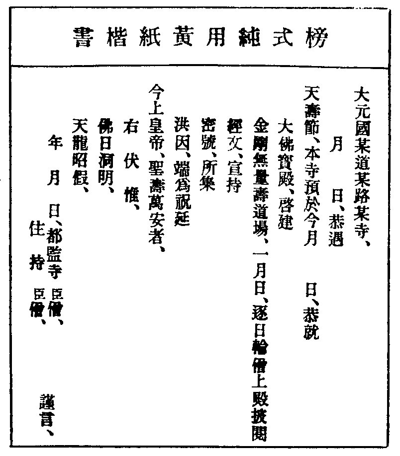

卍新纂大日本續藏經 第63冊
No.1250 禪林備用清規 (10卷)
【元 弋咸編】
第 1 卷
No. 1250-A
外。放形骸。黜邊幅。守禮者。莫能與之辨。而其從心不踰矩。卒有合於自然。是則繕性之效。略外以理內。於斯見之矣。淫慾嗔恚。皆謂之道。大雄氏託言為喻。將以語夫上知。愚者不察。悉得以自恣。職教者憂之。於是為清規。而曲為之防。數百年來。遵守罔替。世愈薄。而俗愈侈。奇衺美曼。充滿區宇。澤山咸大師始輯。廣其未備。詢于耆舊。證于編簡。作備用十卷。以拯其極壞。其勤苦之志。於是書足以見之。余甞聞。咸師縛律以為禪。守其師說。不肯以從于人。清嚴峻整。講。道不輟。頑薄敬避。其死也尤奇偉。余愍夫吾儒之教。淪弊若是。使有若咸師一正之。斯得矣。序其書。所以識吾徒之未能也。
泰定二年六月 清容居士 袁桷 敘
No. 1250-B
禮於世為大經。而人情之節文也。沿革損益以趍時。故古今之人情。得綱常制度。以撥道。故天地之大經在。且吾聖人。以波羅提木叉。為壽命。而百丈清規。由是而出。此固藂林禮法之大經也。然自唐抵今。殆五百載。風俗屢變。人情不同。則沿革損益之說。可得已哉。近者大川笑翁二祖。唱道南北山。日用軌則。盛於當代。至元戊寅。依石林和尚於南屏。猶得見其遺風餘烈。及友雲明西堂出所藏抄本。究心訪問。編集成帙。始此書之作。或以為僧受戒首之。或以住持入院首之。壬午依覺菴先師於承天。朝夕扣問。因得以祝 聖如來降誕二儀冠其前。其餘門分類聚。釐為十卷。然猶未敢以傳學者。丙戌夏。留雪竇。千峰琬西堂論其詳。丁亥春。溪西澤和尚正其舛。得於見聞者稔矣。而尚以未身行之為愧。壬辰夏。首眾雙徑。小座湯。有位次高下之爭。諸方往往。廢而不舉。愚以西堂一出。首座再出。都寺三出。後堂四出。藏主維那知客侍者。隨職為位。請於雲峰伯父力行焉。訖事無敢譁者。元貞乙未。備員永嘉天寧。大德庚子。補番易永福。乙巳主廬山東林。皆行之無易。庶幾人情為折中。然視古之清規。不幾於繁縟乎。蓋凷桴土皷。不可作於笙鏞間和之秋。汙樽杯飲。不可施於犧象駢羅之日。目曰禪林備用清規。備而不用之謂也。知我罪我。其惟春秋。
至大辛亥秋 廬山東林 弌咸 書
No. 1250
禪林備用清規
禪林備用清規卷目于后。
禪林備用卷之一
天 聖節陞座諷經
啟建屆期。僧行不給假。堂司整備黃榜。上殿經單。輪差僧簿。維那先五日。粥了備柈袱爐燭香小片紙。詣書記寮。插香觸拜。缺員書狀侍者。同當還香。拜稟云。(天○節。拜請製右語)製了。先呈方丈。親送堂司。還觸拜。維那染疏用黃紙。僉貼○○處。如法嚴整。隔宿備柈袱爐燭香合。維那具威儀。行者帶人力。拓柈。上方丈僉疏。行者覆住持。出即炷香。稟云。(來日啟建○節。拜請和尚僉疏)呈疏僉了而退。行者就覆方丈。來早諷經。挂諸處諷經牌。燒香侍者覆方丈。來早上堂。正日僧堂徧食槌浚。再槌一下云。(白大眾。粥罷。聞鍾聲。各具威儀。詣大佛殿。啟建天壽聖節。謹白)復槌一下。往住持前問訊。面北巡堂一帀。至外堂下間至上間。歸內堂中問訊出。正日行香了。侍者覆住持。粥了上堂。客頭挂上堂牌。大殿排香燭湯茶鐃鈸手爐。堂司報方丈。客頭先覆住持。覆侍者鳴皷。堂司預鳴眾寮前板三下。集眾坐堂。單寮蒙堂諸寮。並外堂坐。住持出寢堂坐。侍者問訊東班立。行者西立。轉鼓。侍者下法堂上角立。頭首下地。聖僧前問訊。領眾出堂。上法堂。座前一字立問訊。歸立西班。大眾鴈列于后。
行堂。鳴板三下。參頭領眾。列庫堂前。或土地堂前。俟。問訊知事。班集法堂。西班歸班已。亦一字列座前問訊。都寺引班歸左。朝揖立定。
眾行者至法堂上間。左列迎住持。侍者入請住持。住持轎到眾前。行者列知事後。眾去頭袖。問訊。住持和南。登座。侍者隨上座。香合蓋盛香。皷絕捧呈。住持祝香了。侍者接香。以左手。插爐中。右手拈從香一炷。蓋合。住持上脚踏問訊。斂衣趺坐。侍者下座。先末班引過座下。一字列問訊。燒香侍者引班歸位。次首座領班。座前一字列。大眾同問訊。歸班。次東班出班。行者隨問訊。歸位。有東西堂。座下出班問訊。(叉手出班。合掌歸位)侍者登座。開合。左手上香一炷。蓋合。轉身。提坐具。問訊住持。謂之請法。側立拱聽。問答回向。提綱。不許敘謝官貴。況語餘事。結座。白云。(大眾各具威儀。詣大佛寶殿。啟建○○節)下座。鳴大鐘。眾到殿。點茶湯。侍者下畢鳴行香鈸。維那轉身爐前。揖住持上香。侍者捧香合。次東堂西堂出班。兩序對出。無借香問訊。若(堂中立僧)首座。大方西堂。先於立班西堂前出班也。東序右手上香。左轉歸位。西序左手上香。右轉歸位。出班畢。大眾同展三拜。此拜佛。為告天祝
壽也。住持不収具。就跪爐。非法。維那白佛宣疏。至右伏以。住持再燒香。展拜跪爐。知客跪進手爐。侍者跪進香合。宣疏畢。知客跪接爐。住持収具。
或住持受州縣關請。上首知事。偏位跪爐。庫司客頭跪進手爐。復跪接爐。庫司茶頭跪進香合。
惟那舉楞嚴回向。啟建。堂司行者。隔日將轉僧簿。請住持頭首眾僧。僉書上下字名。具寫差單。輪排經目于上。揭挂殿內。至日。住持同眾上殿看經。各務嚴肅。鳴大鐘。上殿。各炷香三拜。歸位看經。維那當詣殿。燒香一炷。大展三拜。知客躬當點湯茶。庫司嚴設香燭點心湯茶。堂司行者。供送恐有缺典。維那時當照拂。至晚。鳴大鐘。下殿。每日僧員。依戒輪定。堂司庫子。直殿行者。時時守防官員到來。拈香鳴鐘。集眾諷經。方丈庫司迎送
聖節內。遇八。佛殿念誦。巡廊鳴板。眾集。相對鴈立。住持至。鳴大板。即鳴大鐘。燒香歸位。維那出班念誦。式見後。誦畢。鳴僧堂前鐘三下。眾散。先不請湯也。凡遇聖節啟散。暫到客司給由。隨身照證。住持領眾看經。知事營供俵嚫。祝
一人壽。務在處誠。當報水土之恩也。滿散節目。並同。堂司製疏。具列經文。例留交割準備刷具。凡住持公出。歸日不問近遠。鳴鍾集眾。門迎。詣方丈。人事。眾散。住持更不相巡寮報禮也。
陞座回向(前同榜意。今辰啟建。住持臣僧。升于此座。舉唱宗乘。所集洪因。端為祝延聖壽萬安者)白佛偈(玉毫騰輝。金色炳耀。具大人相。號正徧知。瞻之仰之。福滿沙界)。
又(大圓滿覺。應跡西乾。心包大虗。量周沙界)。
回向(上來諷誦。洪因。祝延 聖壽萬安。金剛無量壽佛。仁王菩薩云云)。
佛殿念誦(皇風永扇。帝道遐昌。佛日增輝。法輪常轉。為如上緣念。清淨法身毗盧遮那佛)。
路由(暫到一僧。某甲上座。今月幾日。恭遇天○節。已於本寺。啟散訖。憑此為照者。年月 日。某寺知客。某押給)。
右語。
(啟)伏以。紅日升時。四海賴照臨之慶。白雲深處。常年伸祝頌之誠。以不可思議之功[烈-列+勛]。倍無有筭數之壽量。
皇帝陛下。恭願。淵獻珠。山獻玉。令夷夏之歸仁。車同軌。書同文。盡山川之一統。但臣僧(某)。下情無任瞻
天望聖。激切屏營之至。謹疏。
(散)天開閶闔。慶流虹遶電於斯辰。人効華對。悉望日瞻雲於此際。爰畢三旬之華藏。聿嚴萬歲之山呼。恭願。曆數在躬。文明至治。九五福曰富曰壽。無彊為休。八千歲為春為秋。自今而始。

地 旦望祝聖陞座
預晚燒香侍者。詣方丈咨稟。上堂。次早。問訊時。提起令客頭行者。挂牌報寮。早粥不鳴下堂鐘。方丈客頭。敷陳法座。茶頭秉燭裝香。堂司行者覆首座。眾寮前鳴板三下。(報眾坐堂。首座與眾頭首。立僧堂前。候鼓初鳴入堂。首座居後入。轉鼓首座領眾詣法堂。兩班問訊法座。各東西列班。住持登座。祝香了出班)聖節同禮。古之學者。有疑未決。出眾請問。宗師答話。貴在解粘去縛。今之索話。已失古意。先大慧深非之。
住持舉揚。端祝
一人之壽。有官客。略以敘陳。激發學者。細大因緣。則在五參升堂。山門大小事務。方丈會茶講議。晚參訓習童行。各有其時。法堂演唱宗乘。不可敘談世諦。厭眾聽也。
玄 藏殿祝聖諷經
夫旦望藏殿祝聖諷經者。期帝道遐昌。法輪常轉也。粥罷。行者報堂。鳴鐘集眾。鳴皷轉藏。行者鳴鈸。維那舉云。(稱念摩訶般若波羅密多)住持領眾繞藏行道三帀。以表法輪三轉。立定。維那舉大悲呪。
回向(大圓照中。有華藏海。功超造化。道絕名言。三光電卷。而實相閑。六合雷奔。而湛然寂。不思議法。難盡讚揚。某州某寺。住持臣僧。月旦令辰。謹集合山僧眾。恭趁藏殿。繞旋行道。稱念摩訶佛母聖號。諷誦秘章。所集洪因。端為祝延 今上皇帝。聖壽萬安。金剛無量壽佛。仁王菩薩。云云)。
又(三轉法輪於大千。其輪本然常清淨。天人得道斯為證。三寶從茲現世間)。
黃 朝廷祈禱
凡遇焚修祈禱。須虔誠齋沐。如法鋪陳。華果新鮮。香燭殊勝。殿宇時時洒掃。僧眾整肅威儀。官員拈香。加禮迎送。住持知事。無涉他緣。耆舊寮舍。常切嚴淨。期必致效。功有攸歸。山門祈禱。庫司先覆住持。意旨預呈維那。堂司行者報寮挂牌。二時集眾諷經。啟散嚴設供養。遇夏祈禱。楞嚴會。不得就便。回向指日告功。每日早粥。下堂到殿。諷經輪日。回向隨方毗尼。有處五參陞堂。則不諷經。非法也。若旦望下堂。須必祝聖。諷楞嚴呪。須結呪心。漸次方緩緩舉呪。克期功効。各冀專誠。
宇 如來降誕
將屆誕期。堂司行者。率眾財具數送櫃頭。營供養。此古法也。在住持講行。維那命書記製右語。僉疏。並與聖節同。庫司預令行者。嚴設毗藍園。內安太子銅像。煎香湯安二小杓。盆內。大佛前敷陳供養。至日粥罷。住持陞座。祝香提綱。回向結座。下座云。(大眾各具威儀。詣大佛殿浴佛諷經)大眾同到殿。住持上香三拜。不収具。進前獻湯進食。侍者下竟。復位三拜。上香下嚫。點茶三拜収具。鳴鈸。維那揖香。住持上香。侍者捧合。兩班無借香問訊。出班了。大眾同禮三拜。詳為 聖節禮同。
如或住持它緣。首座偏位跪爐。聖僧侍者堂司庫子。跪進手爐香合。方丈侍者亦得(為法重也。古宿公論。唯佛祖忌。當首座代住持。為傳法故聖節知事代。為山門也。大慧笑翁皆行之。維那白佛。宣疏了。舉浴佛偈。行道。浴佛。須備銅錢。浴佛將畢。舉楞嚴會上。起呪。諷了。回向云。上來諷經功德。回向真如實際。莊嚴無上佛果菩提。四恩等報。三有齊資。十方三世云云)。
陞座回向(某州某寺。四月初八日。恭遇本師釋迦如來大和尚。降誕之辰。比丘眾。率長財入常住。營備香羞。以伸供養。遺教遠孫 比丘某甲。升于此座。舉唱宗乘。所集殊勳。上酬 慈蔭者)。
白佛偈(一月在天。影涵眾水。一佛出世。各坐一花。白毫舒而三界明。甘露洒而四生潤)。
浴佛偈(我今灌沐諸如來。淨智莊嚴功德聚。五濁眾生令離垢。同證如來淨法身)。
右語 兜率天宮不起于座。而常說是法。毗藍園內乘大願輪。而示現受生。顧上下與四維。稱獨尊於三界。芳流像教。屬此日之誕彌。瑞湧龍淵。効當年之灌沐。本師釋迦如來大和尚。伏願。運甚深之智海。回既倒之狂瀾。盛世光明。上延
聖主無疆壽。微塵含識。同證如來淨法身。謹疏。
宙 涅槃成道
凡疏語回向。即(涅槃成道)之辰。預日製疏。率眾財回供養。出班展拜。佛誕禮同。
佛誕涅槃成道。常住設供。無嚫(唯佛誕。涅槃。成道香。住持懷中取出。自插爐中)白佛偈(淨法界身。本無出沒。大悲願力。示有去來。正覺山前。覩明星而悟道。大千界內。駕慧日以流輝) 回向(上來諷經功德。回向真如實際。莊嚴無上佛果菩提。四恩普報。三有齊資。法界有情。同圓種智。十方三世一切諸佛。云云)。
右語 千百億身。徧塵區而不滅。七十九載。順世相以無常。想滿月之慈容。對中春而殞涕。慨此拈花之微旨。漸成蔓草以難圖。供効純陁誠伸追遠。本師釋迦如來大和尚。伏願。覺天空闊。蕩蕩乎無能名焉。慧日流暉皜皜乎。不可尚矣。盡眾生法界。契涅槃妙心。
(成道) 雪覆千山。大地春回寒谷。星明午夜。覺天雲散長空。示六年苦行之因。證歷劫進修之果。(某)等叨承末運。忝嗣宗猷。深懷麻麥之飡。茲焉有愧。虔奉蘋蘩之供。理亦難忘。本師釋迦如來大和尚。伏願。餘光照臨。開發蒙昧。大千國土。永延
聖主福壽康寧。一切眾生。咸證如來智慧德相。
洪 達磨祖師忌
將屆諱辰。堂司預命。製疏僉疏。佛誕禮同。既尊佛祖。禮宜一體。今尚簡無疏。非尊祖重道之意。住持專誠。山門執事。備辨。維那侍者。提點。法堂敷陳玩具書畫參頭差行者。排辦守直。法座挂真。嚴設祭筵。爐瓶香几。一一如儀。上間即設禪椅拂子衣架挂法衣。下間設椅子經桉爐瓶香燭經卷而已。設床榻者非。堂司行者覆方丈諸寮。當晚諷經。并覆來日半齋。各具威儀。散忌諷經。參前鳴僧堂前鐘。集眾鳴皷。獻特為湯。住持上香三拜。不収具。進前上湯。侍者下竟。復位三拜。進前勸湯。問訊三拜。収坐具。行者鳴手磬。維那出班念誦。式見後。誦畢。鳴僧堂前鐘三下。眾散。昏鐘鳴。集眾諷經。住持上香。維那舉楞嚴呪。回向。次參頭領眾。排前喝參。禮拜諷經。作寮排列聲喏。參拜諷經。次日早粥罷。住持如常。上香上湯。維那舉大悲呪。回向。半齋。鳴僧堂前鐘。集眾。法堂上下間。面祖排立。住持上香三拜不収具。點湯進食。侍者下竟。復位三拜。進前燒香。下嚫三拜。収具。鳴皷。講特為茶禮。燒香。揖茶三拜。鳴皷三下。住持舉拈香佛事畢。行者鳴行香鈸。維那轉身爐前。揖住持上香。侍者捧合。次東堂西堂兩班。出班畢。無借香。大眾同展三拜。維那白真宣疏。跪爐。疏畢。舉楞嚴。回向。
念誦式(切以。悲願深重。道大難名。忝借潤於餘波致有光於後裔。仰憑大眾念。清淨法身毗盧遮那佛。十號了 上來念誦功德。奉為初祖菩提達磨大師。上酬慈蔭。十方三世一切云云)。
初夜回向 (淨法界身。本無出沒。大悲願力。示有去來。仰冀真慈俯垂昭鑒。今月初五日。伏值菩提達磨大師。示寂之辰。比丘眾。率長財。入常住。營備香羞。預伸供養。諷誦大佛頂萬行首楞嚴神呪。所集殊勳。上酬慈蔭。伏願。群機有賴。報揚少室之家風。妙智無窮。成就大乘之根器。十方三世一切諸佛。云云)。
散忌回向(上來諷經功德。奉為初祖菩提達磨大師。莊嚴無上佛果菩提。十方三世云云)。
右語 西竺國無邪見師。大破六宗之惑。東震旦有大乘器。肇開五葉之春。爰逢瘞履之辰。敢効蘋蘩之供。菩提達磨大師。伏願。彌堅本誓。不墜單傳。俾四七二三之道愈光。歷百億千萬之年永茂。
荒 百丈祖師忌
昔白雲端禪師。立祖堂。綱紀序云。吾道盛於此土。菩提達磨之綱焉。剏立禪林之制。百丈大智之紀焉。此實天下之共知。而柰何天下祖堂中。各以開山傳次者為其祖。殊不思乃宗乃祖。所傳所持之[宋-木+取]者乎。嗚呼教來五百年後。達磨始來。嚮之諸家之賢者。豈不知性即乎聖。何為竟自以性以聖之泥乎。乃須少林之後猶彈指頃。不假文字語默有無。釋然亡其所待而自得還其本。又古之岩居穴處者。但以法為勝為味。殊不慮。今日其間者驕獨大智禪師慮之。而廓以禪林之度。由是資之。而少林之風。至今靄然於天下。吾欲天下祖堂中。以達磨大智正其位。以開山傳次者倍之。貴來者尊其始歸其大。豈不然乎 大哉白雲禪師。發揚祖宗。潛德幽光。若揭日月。俾天下學者。知所宗仰。今諸方叢林。遇大智忌。而不能設。為主法者。盍思白雲之意。正月十七日正忌。維那預製疏僉疏。法堂鋪設。預夜諷經。上食。拈香佛事。大眾拜。跪爐。諷經。散忌。與達磨忌。禮一同。
右語 大智洞明。十日照臨。百世真機。普赴六趣。攝化群生。叢林聿新。斯文未喪。百丈大智禪師。伏願。巍巍乎疊矩重規。瞻在前忽在後。轟轟乎朝鐘暮皷。老者安少者懷。闡爾宗猷。繩其祖武。謹疏。
日 開山祖忌
當遵舊典。不忘厥祖。可力行之。若檀越建寺。就請開山。例當修忌。或立事巧於山門者勿拘也。須當於法堂中間。鋪設。集眾。諷經。出班。展拜。與達磨忌同禮。
回向(寶明空海。湛死生漩澓之波。大寂定門。融今古去來之相。仰冀真慈俯垂昭鑒。今月某日。伏值開山某人和尚。示寂之辰。常住營備齋羞。以伸供養。比丘眾。諷誦大佛頂萬行首楞嚴神呪。稱揚聖號。所集殊勳。奉為真慈。 伏願。曇花再現。重開覺苑之春。慧日長明。永燭昏衢之夜。十方三世一切諸佛。云云)。
月 諸祖忌
道行崇重。功宰山門。隔日法堂鋪陳。不可越例。若列祖如常。粥罷諷經。當請牌座。法座敷設供養。依法出班。住持兩班展拜。侍者班尾拜。借香問訊。或大眾拜。有見。只就祖堂。下食一位。諷經(甚非禮也)。
回向(仰冀真慈。俯垂昭鑒。今月巳日。山門伏值前住當山第幾代。某人和尚。示寂之辰。營備香羞。以伸供養。諷誦大悲神呪。所集殊勳。奉為真慈增崇品位。十方三世。一切諸佛。云云)。
盈 嗣法師忌
先德唯以激唱宗乘。發明自己。誨示方來。知有授受。以報德也。巴陵三轉語。作忌。不墮流俗。後世道不及古。務在廣設祭筵。修營厚供。可無愧乎。近代大川做浙翁和尚忌。橫川設天目和尚忌。方丈設位。置食一分。燒香一炷。大展九拜。不許諷經。二大老深有意焉。
然尊師重道。禮不可虧。忌辰當須設供衣閤中。預計錢物。歸常住。置祭設供。法堂鋪陳。法座挂真。達磨忌同。
講特為湯。請名德西堂光伴。列坐之右。無則已之。住持行禮。鳴皷三下。退座。
堂司行者覆參前諷經挂牌。報諸寮。并報來日半齋。各具威儀。散忌諷經。昏鐘鳴。集眾。諷經。侍者令方丈客頭。預請兩班耆舊。伴真湯果。於法堂上間設位。行者計位鋪排。如法眷尊長同門兄弟。皆當請之。小師師孫不可同席。
僧眾諷經散。侍者揖請兩班耆舊。住持引入座。坐定。住持離位。真前上香上湯。復位。侍者燒香。下湯。行湯果。
次早粥罷。上香上湯。住持展拜。僧眾諷大悲呪回向。鄉人法眷。隨即舉呪。
半齋。鳴僧堂前鐘。集眾。住持展具三拜。上香下食三拜。下嚫鳴皷。行特為禮。燒香下茶三拜。鳴鼓三下。退座収具。出班燒香。侍者捧合。住持舉佛事。兩班出班。不借香。大眾同禮三拜。盖在(座下。皆曰參學〔諷經散忌。凡諷經時。住持只立真左。有法眷同列。齋時入堂。住持燒香一炷〕)大展三拜入位。侍者行嚫。多見法堂諷經。俵嚫。甚非禮度。
昃 送法衣
專使首到客司人事。知客同專使。上侍司。煩通報方丈。或即相接。或在來早。侍者令客頭報請兩班。專使插香。先通客禮。起爐前謝茶畢。再插香兩展三拜。免則止之。柈袱托呈。法衣信物。入座。光伴獻茶罷。轉特為位。獻湯。兩班同送安下。侍者引巡寮。別日致祭。上堂拈衣。有佛事。禮與下遺書同。
禪林備用卷之一